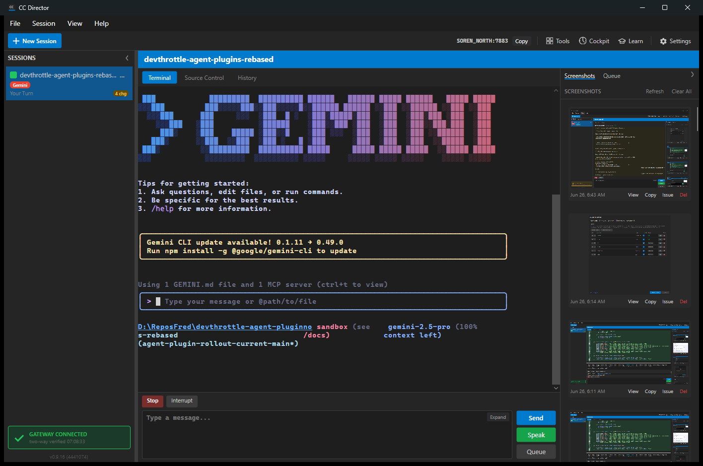
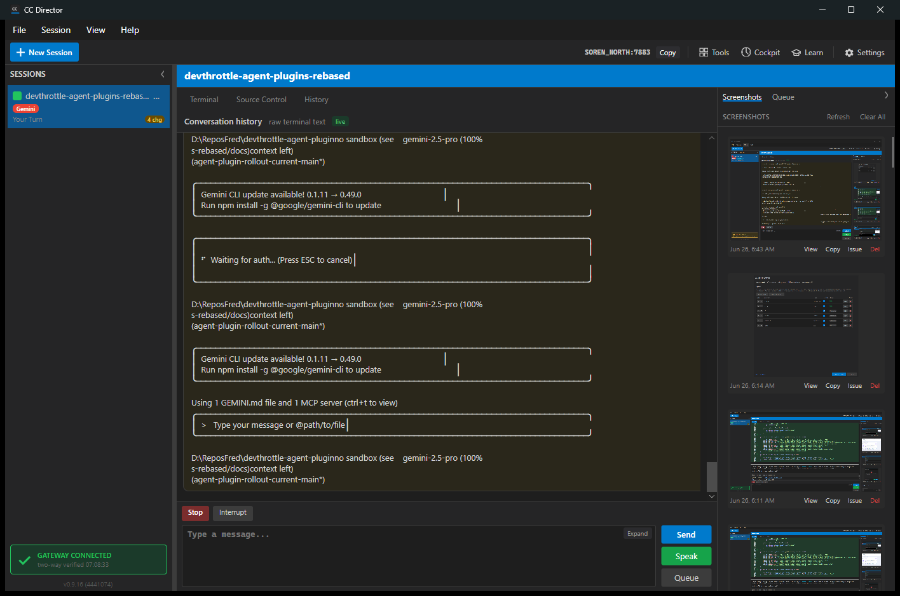

PASS.
Gemini is now represented by GeminiAgentPlugin instead of the generic
BuiltInAgentPlugin adapter. The plugin owns Gemini settings metadata,
executable detection candidates, validation arguments, terminal-buffer history
metadata, launch metadata, presets, agent construction, and the Gemini driver binding.
Gemini history remains data-only: historyProvider=TerminalBuffer.
The visible History tab is still Director-owned UI, verified by the existing
plugin assembly guardrail test and live screenshot.
src/CcDirector.Core/AgentPlugins/GeminiAgentPlugin.cssrc/CcDirector.Core/AgentPlugins/AgentPluginRegistry.cssrc/CcDirector.Core.Tests/AgentPlugins/AgentPluginRegistryTests.csdotnet test src\CcDirector.Core.Tests\CcDirector.Core.Tests.csproj --filter "FullyQualifiedName~AgentPluginRegistryTests" /m:1 /nodeReuse:false Passed! - Failed: 0, Passed: 26, Skipped: 0, Total: 26
dotnet build src\CcDirector.Avalonia\CcDirector.Avalonia.csproj /m:1 /nodeReuse:false Build succeeded. 0 Warning(s) 0 Error(s)
Built isolated slot cc-director15.exe from this branch and launched
it through the project scheduled-task slot mechanism. The current app log phrase
Control API listening was used to detect the port because the helper
script still searches for the older Kestrel listening phrase.
15http://127.0.0.1:7883/healthz returned status=ok3ae69181-f9ef-4df9-88b5-da6122a83675GeminiCancel, Interrupt
The History tab remains global Director UI. The scrollbar is visible and the terminal-buffer history content stays above the Stop/Interrupt/composer area.

screenshots/settings-catalog.json contains the Gemini catalog entry with historyProvider=TerminalBuffer, supportsPreassignedSessionId=false, supportsStudioMode=false, and driver capabilities Cancel/Interrupt.screenshots/gemini-session-created.json contains the create response from POST /sessions.screenshots/gemini-session.json contains the live Gemini session response from /sessions/{id}.